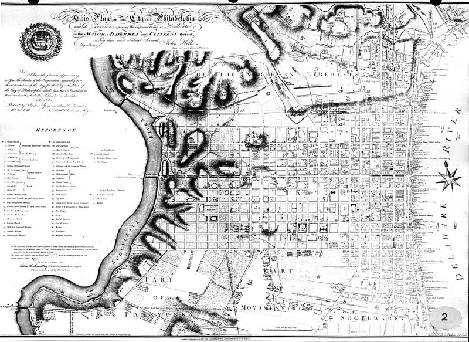
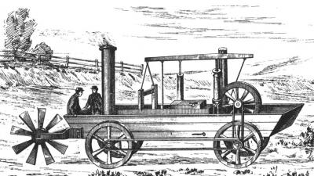
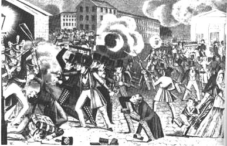
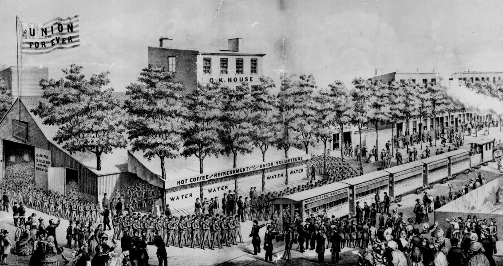
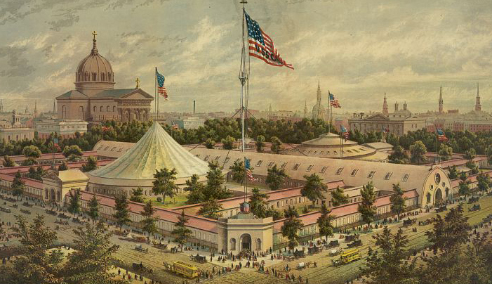

|
Site of the Constitutional Convention, and the nation's capital from 1790 to 1800, the
City of Philadelphia began the nineteenth century as the largest and most prosperous
metropolis in the United States. Although soon eclipsed in size and economic might by New
York, Philadelphia remained a leading center of finance, publishing, and the arts, and
evolved in the mid-1800s into the nation's most critical center of industry and invention.
It played a crucial role in the Civil War, serving as a center of manufacturing, a source
|

Philadelphia's city plan in 1790, shortly after George
Washington took office as president
|
of tens of thousands of troops, and a key contributor to fundraising drives and other
relief efforts.
Founded as a religious haven by the English Quaker William Penn in 1681, Philadelphia
was among the first master-planned cities in the world, featuring a rectangular grid
pattern and five public squares. Built on a narrow peninsula between the Delaware and
Schuylkill Rivers, Philadelphia had the natural advantages of a good port, navigable
waterways to the interior, and rich surrounding farmlands. Consequently, the town quickly
became a mercantile leader, and was among the largest English speaking settlements in the
world by the latter half of the eighteenth century. It was a wellspring of social
innovations throughout the colonial period--the nation's first hospital, first public
school and public library, first fire department, first insurance company, and first
school of law were established in Philadelphia.
The city was chosen to host the First Continental Congress in 1774, as well as the
Second Continental Congress, which ended with publication of the Declaration of
Independence in 1776. In 1787, 55 delegates representing the 13 states met again in
Philadelphia to draft the United States Constitution.
Given Philadelphia's central role in the nation's founding, as well as its size and
economic clout, the city was a leading candidate to become the permanent capital of the
United States. Although Washington, D.C. was ultimately chosen, Philadelphia was the
interim capital under Presidents George Washington and John Adams. The city was at the
peak of its influence in those years. The residents of city and its immediate suburbs
totaled 67,787 in 1800, more than any other metropolitan area in the United States. More
than 3,500 trading vessels passed in and out of Philadelphia's port in 1805, loaded with
hard currency and goods like flour, lumber and furniture destined for harbors in China,
India, Mexico, Cuba, Europe and South America.
Philadelphia was culturally ascendant as well. The city had the nation's first natural
history museum—complete with a giant mastodon skeleton—and its oldest art museum and
school, the Pennsylvania Academy of Fine Arts. Elaborate theater productions were common.
Philadelphia was the center of book publishing in the United States, and it boasted dozens
of newspapers and magazines that represented a wide array of political viewpoints.
In 1854, Pennsylvania's state legislature passed the Act of Consolidation, which
combined Philadelphia with dozens of its nearest suburbs. The legislation quadrupled the
city's population overnight. Even so, Philadelphia could not keep pace with the torrid
growth of New York, which became the nation's largest city in 1810, and soon surpassed
Philadelphia as a commercial center as well. However, as home of the federally chartered
Bank of the United States, Philadelphia remained the nation's most important financial
center. Established in 1791, the First Bank of the United States created a single currency
and established credit for the new nation. When the bank's federal charter expired in
1811, the Philadelphia financier Stephen Girard purchased its headquarters and most of its
stock. Girard went on to become the richest man in the United States, with a net worth
estimated at $100 billion, when adjusted for inflation.
Following the war, rampant inflation and the federal government's inability to finance
its debts led President James Madison to charter a Second Bank of the United States in
1816. After seven years of mismanagement, the bank was taken over by Nicholas Biddle, an
accomplished author, editor, diplomat and financier. Born to a prominent Philadelphia
family, Biddle had graduated from Princeton University at age 15 as valedictorian. Though
|

The Oruktor Amphibolos
|
he was credited with righting the bank management, Biddle was bitterly opposed by
President Andrew Jackson, who sought to close the institution. Though the dispute centered
on national fiscal policy, it was also rife with class and geographical grievances.
Jackson felt that Biddle and his Philadelphia bank embodied northeastern economic
dominance over Southern and Western states, particularly Jackson's home of Tennessee.
Despite congressional opposition, Jackson succeeded in destroying the Bank of the United
States by revoking its charter and withdrawing federal deposits in 1833. From that point
forward, Philadelphia's significance as a financial center slowly waned.
Fortunately for the city's economy, Philadelphia was ideally situated to take advantage
of the industrial revolution. The city's rivers provided waterpower; its large population
offered a ready workforce; its banks supplied vast amounts of capital; and abundant
sources of anthracite coal and iron were nearby. Philadelphia also had the human talent to
make use of such advantages. The city was filled with engineers and inventors, such as
Oliver Evans, who opened the city's first ironworks in 1792 and began building steam
engines in 1800. In 1805, Evans built a bizarre, amphibious steam-powered vehicle that he
called the Oruktor Amphibolos, which he drove through the streets of Philadelphia
before trying (and failing) to use the device to dredge the Delaware River. Philadelphia
engineer Frederick Graff pioneered modern methods for supplying cities with water. After
two virulent yellow fever outbreaks in the 1790s killed thousands of Philadelphians, the
city was anxious to secure a clean and reliable source of water. In response, Graff built
the famed Fairmount Water Works, which in 1822 began delivering water through iron pipes
to Philadelphia residents. It would be decades before similar systems were constructed in
cities like New York and Boston.
Other infrastructure projects, such as the Schuylkill Canal and the Reading Railroad,
further enhanced Philadelphia's industrial capacity. The Reading Railroad, one of the
first rail lines in the United States, linked Philadelphia to the heart of Pennsylvania
coal country in 1842. Within two years, total freight carried on the line increased by 750
percent, and the rail line soon became the heaviest traveled freight corridor in the
nation. Equally notable was Pennsylvania's Main Line of Public Works, a statewide network
of waterways and rail links constructed throughout the mid-nineteenth Century, which
vastly improved Philadelphia's access to the resources and markets of the growing American
interior. The Pennsylvania Railroad, headquartered in Philadelphia, got its start building
the Main Line of Public Works, and would go on to become the largest publicly traded
corporation in the world.
Philadelphia was also the world's leading center of locomotive construction, building
engines for domestic use, as well as for rail lines in England, Austria, South America,
Russia and Cuba. The most prominent manufacturer was Baldwin Locomotive Works, which
captured nearly half of the domestic market by the mid-nineteenth century. Yet antebellum
Philadelphia was never dominated by a single industry. Among other products, the city
refined sugar, built ships, and manufactured textiles, fire engines, coaches, gas
fixtures, carpets, and glass.
The growth that characterized Philadelphia in the early decades of the nineteenth
century did not come without significant costs, however. A dedicated pacifist, William
Penn named the city he founded by combining the Greek words for "brotherly love."
Geographically, Penn wanted Philadelphia to resemble a rural escape more than a major
city, free of the fires, disease, and overcrowding of London. As he wrote in
Instructions of William Penn (1681), Philadelphia was to be "a greene Country
|

The Philadelphia Riot of 1844
|
Towne, which will never be burnt, and always be wholesome." Nineteenth-century
Philadelphia bore little resemblance to Penn's vision, however. Religious strife was
commonplace, as were race riots and labor conflicts. The working poor lived in crowded
ghettoes. Despite the city's best efforts, outbreaks of disease were common.
Before the War of 1812, open racial conflict was rare in Philadelphia. More than 6,000
free African Americans lived in the city, comprising about 12 percent of the total
population. There were virtually no slaves—the census recorded only three in 1810—at least
five African American churches, and a small but growing group of affluent African
Americans. That state of affairs ended abruptly following the war, when African Americans
and immigrant laborers began to compete for jobs in Philadelphia factories. Those tensions
would sometimes flare into violence, particularly when the city's strong abolitionist
movement, rooted in Quaker traditions, demonstrated or met to protest slavery. In 1838,
for instance, after black and white members of the Anti-Slavery Coalition of American
Women dared to walk arm-in-arm on a public street, a mob burned down the hall where they
had gathered.
As tensions between North and South grew, Philadelphia's extensive economic and
familial ties with slave-owning states led to increased hostility towards African
Americans. Following John Brown's 1859 raid on Harper's Ferry, anti-African American
sentiment in Philadelphia was so high that the mayor dispatched 120 police officers to
prevent a riot outside a meeting of the Anti-Slavery Society. On another occasion, 6,000
Philadelphians—including many leading citizens—met to condemn Brown's attack and proclaim
their support for the Southern cause.
The coming of the Civil War marked a sea change in the attitude of many Philadelphians.
Quickly, the blame for the conflict shifted from abolitionists and African Americans to
treasonous Southerners. Flags, bunting, and other patriotic decorations were displayed in
all corners of the city, and angry mobs sought to punish Southern sympathizers. Several
pro-Southern newspapers, most notably the Palmetto Flag, were forced to cease
publication and a number of Democratic leaders were arrested and imprisoned.
Philadelphians also volunteered in large numbers for the Union Army—more than 100,000
in total. The city produced 50 infantry and cavalry regiments—most notably the regiments
of the Philadelphia Brigade—and served as the training and recruitment depot for 11
|

The Union Volunteer Refreshment Saloon
|
regiments of United States Colored Troops. Several prominent Union officers also called
Philadelphia home, including Maj. Gen. George Gordon Meade, Maj. Gen. John Gibbon, Maj.
Gen. David B. Birney, and Maj. Gen. Andrew A. Humphreys.
Philadelphia's female population responded enthusiastically to the call of duty. They
organized the Union Volunteer Refreshment Saloon and the Cooper Shop Refreshment Saloon;
both were staffed by volunteers who greeted arriving soldiers with refreshments and letter
writing materials. Philadelphia women also staffed more than two dozen hospitals in the
city, treating in excess of 150,000 people. In 1864, they organized the Philadelphia
Sanitary Fair, which raised $1,046,859 to aid Union soldiers in the field.
In addition to contributing manpower and money, Philadelphia played a critical role in
producing materiel during the Civil War. The city's Schuylkill Arsenal made the majority
of the Union Army's uniforms, while the Frankford Arsenal manufactured millions of rounds
of munitions and the Sharp and Rankin's factory constructed thousands of breech-loading
rifles. The Philadelphia Navy Yard constructed 11 warships and private shipyards
constructed a dozen more.
Although Philadelphia was located in close proximity to the Confederacy, and made an
attractive target for an invading army, the city's residents took little interest in
|

The Philadelphia Sanitary Fair of 1864, also known
as the Great Central Fair. The money that was raised would be equal
to roughly $20 million today.
|
building defensive fortifications. When Gen. Robert E. Lee moved into Pennsylvania in June
1863, Union Maj. Gen. Napoleon Jackson Tecumseh Dana was ordered to oversee the
construction of defenses for Philadelphia. He was able to find few willing laborers, and
made very little progress before Lee was compelled to retreat following the Battle of
Gettysburg. The city was never invaded.
Overall, the Civil War proved a boon to the economy of Philadelphia, propelling its
growth into one of the great industrial centers of the Eastern United States. It also
changed the nature of politics in the city. What had once been a Democratic stronghold
became solidly Republican, and would remain so for the next century. Once the Civil War
ended, Philadelphia returned to a role it knew well: economic and cultural powerhouse.
Famously, it also played host to the nation and the world, at a grand Centennial
Exhibition and World's Fair celebrating the 100th anniversary of the United States in
1876. It was a fitting event for Philadelphia, a city that was critical to the political
creation, economic success and cultural development of the young United States.
Source: Christopher Bates for the History 139A website.
|